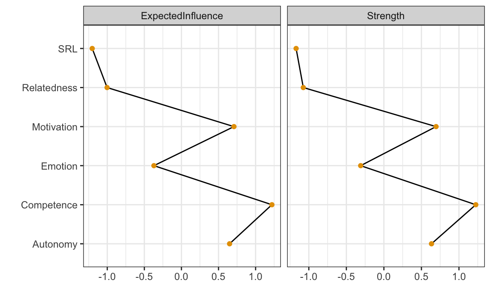

here::here("code", "_common.R") |>
source()
# Load packages
if (!requireNamespace("pacman")) install.packages("pacman")
pacman::p_load(
rio, bootnet, networktools, NetworkToolbox, NetworkComparisonTest, qgraph,
mgm, matrixcalc
)24 Network psicologici
In questo capitolo imparerai a
- Definire e utilizzare le reti per modellare le interazioni tra variabili psicologiche.
- Stimare reti utilizzando metodi come le correlazioni parziali regolarizzate.
- Rappresentare graficamente le connessioni tra i nodi e interpretare i pesi degli archi.
- Confrontare strutture di rete (ad esempio tra gruppi o contesti) mediante metodi statistici come il Network Comparison Test (NCT).
- Valutare la stabilità dei pesi degli archi attraverso il bootstrapping.
- Verificare l’accuratezza delle misure di centralità utilizzando il case dropping test.
- Interpretare la stabilità delle misure di centralità in base alla correlazione residua con campioni ridotti.
Prerequisiti
- Leggere il capitolo Psychological Networks: A Modern Approach to Analysis of Learning and Complex Learning Processes del testo di Saqr & López-Pernas (2024).
Preparazione del Notebook
24.1 Introduzione
Questo capitolo costituisce un riassunto semplificato del capitolo Psychological Networks: A Modern Approach to Analysis of Learning and Complex Learning Processes del testo di Saqr & López-Pernas (2024).
24.2 La Network Analysis
L’analisi delle reti è un potente strumento per i ricercatori, utile per mappare relazioni, individuare connessioni e identificare cluster o comunità tra elementi interagenti. Questa metodologia si è affermata come una delle più importanti per comprendere sistemi complessi. In psicologia, l’analisi delle reti non è più limitata allo studio delle interazioni sociali, ma viene sempre più utilizzata per esplorare processi astratti come quelli cognitivi, emotivi e comportamentali. In questo ambito, le reti probabilistiche svolgono un ruolo centrale, rappresentando i nodi come variabili psicologiche (ad esempio, punteggi di scale o indicatori di costrutti) e gli archi come associazioni probabilistiche tra di esse.
Un esempio di spicco è il Gaussian Graphical Model (GGM), in cui i nodi rappresentano costrutti psicologici come emozioni, comportamenti o tratti, mentre gli archi riflettono correlazioni parziali. La correlazione parziale rappresenta la relazione tra due variabili controllando l’effetto di tutte le altre variabili nella rete, secondo il principio del ceteris paribus.
Ad esempio, in una rete in cui i nodi rappresentano motivazione, successo accademico, coinvolgimento, autoregolazione e benessere, un arco tra benessere e successo accademico indica che il benessere è associato al successo accademico, indipendentemente dagli effetti delle altre variabili. L’assenza di un arco, invece, suggerisce che due nodi sono condizionalmente indipendenti, una volta considerati gli effetti delle altre variabili.
24.2.1 Vantaggi delle Reti Psicologiche
L’analisi delle reti offre diversi strumenti per valutare la robustezza e la precisione delle stime:
- Accuratezza delle stime: Tecniche come il bootstrapping permettono di valutare la stabilità dei pesi degli archi.
- Centralità: Misure come la forza, vicinanza e intermediazione dei nodi permettono di identificare elementi centrali o influenti nella rete.
- Simulazioni: Analisi basate su campioni simulati consentono di stimare la replicabilità dei risultati.
Consideriamo, ad esempio, una rete che rappresenta le relazioni tra emozioni negative (ansia, tristezza, rabbia), pensieri disfunzionali e strategie di coping. Un arco tra ansia e pensieri disfunzionali potrebbe indicare che l’ansia è strettamente associata ai pensieri disfunzionali, controllando per l’effetto di tristezza, rabbia e coping. Questo tipo di analisi non solo chiarisce le interazioni tra variabili, ma suggerisce interventi mirati: ad esempio, rafforzare le strategie di coping per ridurre l’impatto delle emozioni negative sui pensieri disfunzionali.
In sintesi, la Network Analysis rappresenta un approccio innovativo e rigoroso per indagare i sistemi psicologici complessi, offrendo una visione dettagliata delle interazioni tra variabili e potenziali punti di intervento.
24.3 Tutorial con R
Questo capitolo presenta un tutorial passo-passo su come utilizzare le reti psicologiche applicandole a dati raccolti in indagini trasversali, così come discusso da Saqr & López-Pernas (2024). Il dataset utilizzato contiene le risposte di 6071 studenti a un questionario che indaga le caratteristiche psicologiche legate al loro benessere durante la pandemia di COVID-19, condotto in Finlandia e Austria.
Le domande del questionario riguardano i bisogni psicologici fondamentali degli studenti (relazionalità, autonomia e competenza percepita), l’apprendimento autoregolato, le emozioni positive e la motivazione intrinseca verso l’apprendimento. Inoltre, il dataset include variabili demografiche come paese di residenza, genere ed età.
Nel tutorial, mostreremo come costruire e visualizzare una rete che rappresenti le relazioni tra le diverse caratteristiche psicologiche. Successivamente, interpreteremo e valuteremo queste relazioni e confronteremo le differenze nelle reti tra gruppi demografici. Questo approccio consente di esplorare in modo visivo e quantitativo i collegamenti tra i costrutti psicologici, identificando eventuali differenze tra le categorie demografiche.
24.4 Importazione e Preparazione dei Dati
La prima fase prevede l’importazione dei dati e la loro preparazione, eliminando risposte mancanti o incomplete per garantire un dataset coerente e utilizzabile nelle analisi successive.
I dati vengono importati direttamente da una fonte online. Utilizziamo la funzione import() per caricare il file e drop_na() per rimuovere eventuali righe contenenti valori mancanti.
URL <- ("https://raw.githubusercontent.com/lamethods/data/main/11_universityCovid/data.sav")
df <- import(URL) |>
drop_na()Per rappresentare ciascun costrutto misurato dal questionario, combiniamo le colonne relative agli item dello stesso costrutto calcolando la media delle risposte. Questo approccio permette di ottenere una sintesi per ogni costrutto psicologico (ad esempio Competence, Autonomy, ecc.).
aggregated <- df |> rowwise() |> mutate(
Competence = rowMeans(cbind
(comp1.rec , comp2.rec, comp3.rec),
na.rm = T),
Autonomy = rowMeans(cbind
(auto1.rec , auto2.rec, auto3.rec),
na.rm = T),
Motivation = rowMeans(cbind
(lm1.rec , lm2.rec, lm3.rec),
na.rm = T),
Emotion = rowMeans(cbind
(pa1.rec , pa2.rec, pa3.rec),
na.rm = T),
Relatedness = rowMeans(cbind
(sr1.rec , sr2.rec, sr3.rec),
na.rm = T),
SRL = rowMeans(cbind
(gp1.rec , gp2.rec, gp3.rec),
na.rm = T)
)Dopo aver calcolato i valori medi per ciascun costrutto, manteniamo solo le colonne appena generate. Questo rende il dataset più pulito e specifico per l’analisi.
Inoltre, creiamo dei sottoinsiemi di dati in base al genere (un dataset per i maschi e uno per le femmine) e al paese (un dataset per l’Austria e un altro per la Finlandia). Utilizzeremo questi dataset successivamente per confronti tra generi e paesi.
cols <- c(
"Relatedness", "Competence", "Autonomy",
"Emotion", "Motivation", "SRL"
)
dplyr::filter(aggregated, country == 1) |>
dplyr::select(all_of(cols)) -> finlandData
dplyr::filter(aggregated, country == 0) |>
dplyr::select(all_of(cols)) -> austriaData
dplyr::filter(aggregated, gender == 1) |>
dplyr::select(all_of(cols)) -> femaleData
dplyr::filter(aggregated, gender == 2) |>
dplyr::select(all_of(cols)) -> maleData
dplyr::select(aggregated, all_of(cols)) -> allDataInfine, utilizziamo glimpse() per visualizzare una panoramica del dataset finale, verificando che i dati siano stati preparati correttamente.
allData |> glimpse()
#> Rows: 7,160
#> Columns: 6
#> Rowwise:
#> $ Relatedness <dbl> 3.000, 5.000, 4.667, 4.333, 5.000, 4.000, 4.667, 2.333…
#> $ Competence <dbl> 2.333, 3.000, 4.000, 3.333, 4.000, 2.667, 4.333, 3.667…
#> $ Autonomy <dbl> 2.333, 1.667, 2.667, 3.000, 3.000, 2.667, 3.333, 2.667…
#> $ Emotion <dbl> 2.000, 2.333, 4.000, 3.333, 4.000, 3.333, 4.667, 5.000…
#> $ Motivation <dbl> 1.333, 2.000, 3.000, 2.667, 3.000, 2.667, 4.333, 1.333…
#> $ SRL <dbl> 2.667, 4.333, 4.333, 2.667, 4.333, 5.000, 4.667, 2.667…24.5 Controllo delle Assunzioni
Prima di procedere con l’analisi, è essenziale verificare alcune assunzioni per assicurarsi che il dataset e la rete stimata siano appropriati e robusti.
24.5.1 Matrice di Correlazione Definita Positiva
La matrice di correlazione deve essere definita positiva, il che implica che le variabili incluse non devono essere combinazioni lineari tra loro. In termini pratici, ogni variabile deve aggiungere informazioni uniche al modello. Per controllare questa proprietà, utilizziamo la funzione is.positive.definite() del pacchetto matrixcalc.
Se la matrice di correlazione non fosse definita positiva, è possibile utilizzare metodi alternativi, come l’opzione cor_auto, per ottenere una matrice che soddisfi questa condizione. Nel nostro caso, la matrice risulta già definita positiva. Inoltre, specifichiamo l’argomento use = "pairwise.complete.obs" per includere tutte le osservazioni disponibili per ogni coppia di variabili.
Se la funzione restituisce TRUE, possiamo procedere con l’analisi; in caso contrario, sarà necessario intervenire per correggere il problema.
24.5.2 Assenza di ridondanza tra le variabili
La seconda verifica consiste nell’assicurarci che non ci siano variabili altamente correlate al punto da risultare ridondanti. Questo è fondamentale per garantire che ogni variabile rappresenti un costrutto unico e non una semplice sovrapposizione di altri costrutti già inclusi.
Utilizziamo l’algoritmo goldbricker, che identifica pattern di correlazione fortemente simili tra coppie di variabili. I criteri utilizzati per individuare la ridondanza sono:
- Correlazione alta: \(r > 0.50\)
- Frazione significativa: almeno il 25% delle variabili altamente correlate.
- p-value: 0.05 (significatività statistica).
Eseguiamo il controllo con il codice seguente:
goldbricker(allData,
p = 0.05, method = "hittner2003",
threshold = 0.25, corMin = 0.5,
progressbar = FALSE
)
#> Suggested reductions: Less than 25 % of correlations are significantly different for the following pairs:
#> [1] "No suggested reductions"Se vengono identificate variabili ridondanti, sarà necessario rivedere il dataset, eliminando o modificando alcune variabili per ridurre la sovrapposizione.
24.6 Stima della Rete
Una volta verificato che i dati soddisfano le assunzioni necessarie, possiamo procedere alla stima della rete. Questo processo consiste nel quantificare le associazioni tra le variabili per analizzare come i loro valori si influenzano reciprocamente. Nelle reti psicologiche, le associazioni più comuni sono le correlazioni, che permettono di individuare relazioni dirette o condizionate tra le variabili (ad esempio, se alti livelli di motivazione sono associati ad alti livelli di coinvolgimento).
Le associazioni possono essere stimate attraverso diverse misure, tra cui covarianze, correlazioni semplici, correlazioni parziali e modelli basati su regressioni. In questo contesto, ci concentriamo sulla stima delle correlazioni parziali regolarizzate, una tecnica molto utilizzata nelle analisi di rete psicologica.
24.6.1 Correlazioni Parziali Regolarizzate
Le correlazioni parziali regolarizzate offrono numerosi vantaggi e rappresentano uno standard nell’analisi delle reti psicologiche. Queste consentono di ottenere una struttura della rete interpretabile, evidenziando associazioni condizionate tra le variabili.
Vantaggi Principali:
- Recupero della struttura reale: Le correlazioni parziali regolarizzate aiutano a identificare le relazioni condizionate effettive, eliminando interferenze di altre variabili.
- Sparsità: Forniscono una rete più chiara e leggibile, mantenendo solo gli archi più rilevanti.
La correlazione parziale misura l’associazione tra due variabili controllando l’effetto di tutte le altre variabili nella rete (ceteris paribus). Ad esempio, possiamo stimare l’associazione tra motivazione e coinvolgimento, escludendo l’influenza di variabili come successo accademico, ansia o benessere. Questo approccio permette di concentrarsi su relazioni specifiche e significative.
24.6.2 Regolarizzazione
La regolarizzazione introduce una penalità per semplificare la complessità del modello di rete, contribuendo a eliminare associazioni spurie e a migliorare l’interpretabilità del risultato.
Vantaggi della Regolarizzazione:
- Riduzione degli archi spuri: Elimina associazioni false o deboli causate da rumore statistico o sovrapposizione.
- Chiarezza: Imposta a zero i pesi degli archi trascurabili, producendo una rete meno densa e più interpretabile.
- Affidabilità: Riduce il rischio di errori di Tipo 1 (falsi positivi), mantenendo solo le associazioni più forti e significative.
La tecnica più comune per applicare la regolarizzazione è il LASSO (Least Absolute Shrinkage and Selection Operator), che penalizza la complessità della rete eliminando gli archi di importanza marginale. Questo approccio garantisce che la rete rappresenti fedelmente le relazioni chiave tra le variabili, riducendo il rumore e semplificando l’interpretazione.
In sintesi, la stima delle correlazioni parziali regolarizzate consente di costruire una rete psicologica robusta, chiara e focalizzata sulle relazioni essenziali tra variabili. Questo metodo combina l’efficacia delle correlazioni parziali con l’efficienza della regolarizzazione, fornendo una rappresentazione affidabile e interpretabile delle interazioni tra costrutti psicologici.
24.7 Procedura di Stima della Rete
Il processo di stima utilizza la funzione estimateNetwork() del pacchetto bootnet, che richiede tre elementi fondamentali:
- Il dataset di input contenente le variabili da analizzare.
- Il metodo “EBICglasso” per la regolarizzazione della rete.
- Il calcolo automatico delle correlazioni tra variabili.
La funzione opera attraverso questi passaggi:
- Genera 100 modelli di rete differenti.
- Valuta ogni modello utilizzando l’Extended Bayesian Information Criterion (EBIC).
- Seleziona il modello ottimale che bilancia precisione e parsimonia.
Il parametro gamma (γ) controlla il livello di parsimonia della rete:
- γ = 0: produce una rete più densa con molte connessioni.
- γ = 0.5 (valore consigliato): mantiene solo le connessioni più rilevanti.
allNetwork <- estimateNetwork(
allData,
default = "EBICglasso",
corMethod = "cor_auto",
tuning = 0.5
)Questo codice produrrà una rete statistica ottimizzata che evidenzia le relazioni più importanti tra le variabili, eliminando le connessioni spurie o meno rilevanti.
# Visualizzazione del risultato
summary(allNetwork)
#>
#> === Estimated network ===
#> Number of nodes: 6
#> Number of non-zero edges: 15 / 15
#> Mean weight: 0.1397
#> Network stored in object$graph
#>
#> Default set used: EBICglasso
#>
#> Use plot(object) to plot estimated network
#> Use bootnet(object) to bootstrap edge weights and centrality indices
#>
#> Relevant references:
#>
#> Friedman, J. H., Hastie, T., & Tibshirani, R. (2008). Sparse inverse covariance estimation with the graphical lasso. Biostatistics, 9 (3), 432-441.
#> Foygel, R., & Drton, M. (2010). Extended Bayesian information criteria for Gaussian graphical models.
#> Friedman, J. H., Hastie, T., & Tibshirani, R. (2014). glasso: Graphical lasso estimation of gaussian graphical models. Retrieved from https://CRAN.R-project.org/package=glasso
#> Epskamp, S., Cramer, A., Waldorp, L., Schmittmann, V. D., & Borsboom, D. (2012). qgraph: Network visualizations of relationships in psychometric data. Journal of Statistical Software, 48 (1), 1-18.
#> Epskamp, S., Borsboom, D., & Fried, E. I. (2016). Estimating psychological networks and their accuracy: a tutorial paper. arXiv preprint, arXiv:1604.08462.In sintesi, la funzione estimateNetwork() consente di costruire una rete psicologica affidabile e parsimoniosa, sfruttando il metodo delle correlazioni parziali regolarizzate con penalizzazione LASSO. Questo approccio garantisce un equilibrio ottimale tra complessità e accuratezza, rendendo la rete uno strumento efficace per analizzare le relazioni tra variabili.
24.8 Creazione del Grafico della Rete
La visualizzazione della rete è un passaggio fondamentale per interpretare le relazioni tra variabili. Con la funzione plot(), possiamo creare un grafico chiaro e informativo. Per impostazione predefinita, il grafico utilizza un tema inclusivo per daltonici e rappresenta le associazioni condizionate tra i nodi con le seguenti caratteristiche:
-
Archi blu: rappresentano correlazioni positive.
-
Archi rossi: rappresentano correlazioni negative.
- Spessore degli archi: proporzionale alla magnitudine delle correlazioni parziali regolarizzate.
Ad esempio, il grafico può mostrare una forte associazione tra motivazione, autonomia e competenza, mentre le emozioni risultano strettamente legate alla competenza. Tutte le relazioni visualizzate nel grafico sono condizionate, ovvero tengono conto degli effetti di tutte le altre variabili nella rete, analogamente a quanto avviene in un’analisi di regressione.
allDataPlot <- plot(allNetwork)
LX <- allDataPlot$layoutÈ possibile salvare il grafico in un oggetto R, come allDataPlot. Questo oggetto non solo memorizza il grafico, ma contiene anche informazioni utili, tra cui:
- La matrice di correlazione.
- I parametri di configurazione del grafico.
- Il layout della rete (disposizione dei nodi), salvato in
allDataPlot$layout. Questo layout può essere riutilizzato per mantenere una disposizione visiva coerente tra grafici di reti diverse, agevolando i confronti.
Per migliorare la leggibilità e l’interpretazione, è utile personalizzare il grafico. Ecco alcuni esempi di opzioni disponibili:
-
Titolo: Utilizzare l’argomento
titleper aggiungere un titolo descrittivo. -
Dimensione dei nodi: Regolare con l’opzione
vsizeper migliorare la visibilità.
-
Pesi degli archi: Impostare
edge.labels = TRUEper visualizzare i valori numerici delle correlazioni sul grafico.
-
Soglia di visibilità degli archi:
-
cut = 0.10: evidenzia gli archi con correlazioni superiori a 0.10, mentre gli altri saranno rappresentati con colori più tenui.
-
minimum = 0.05: nasconde archi con valori inferiori a 0.05, riducendo il rumore visivo senza eliminarli dalla rete.
-
-
Layout: Specificare un layout, ad esempio
"spring", per posizionare automaticamente i nodi in modo intuitivo.
Esempio di grafico personalizzato:
allDataPlot <- plot(
allNetwork,
title = "Both countries combined",
vsize = 9,
edge.labels = TRUE,
cut = 0.10,
minimum = 0.05,
layout = "spring"
)Personalizzare il grafico permette di:
- Migliorare la leggibilità, evidenziando le connessioni più rilevanti.
- Ridurre il rumore visivo, concentrandosi su associazioni più robuste.
- Garantire coerenza visiva tra grafici di reti diverse, facilitando analisi comparative.
La possibilità di salvare e riutilizzare il layout o altre configurazioni consente di ottimizzare la comunicazione visiva, rendendo i risultati più chiari e facilmente interpretabili.
24.9 Predicibilità dei Nodi
La predicibilità di un nodo rappresenta la proporzione di varianza che può essere spiegata dalle connessioni di quel nodo con gli altri nodi della rete. È una misura chiave per comprendere l’influenza reciproca delle variabili all’interno della rete e per identificare nodi centrali o meno integrati.
La predicibilità si basa su una regressione lineare in cui:
- Ogni nodo viene considerato come variabile dipendente.
- Gli altri nodi della rete agiscono come predittori.
- Si calcola il coefficiente di determinazione (\(R^2\)), che indica la percentuale di varianza spiegata.
La predicibilità viene calcolata per ciascun nodo. Valori di \(R^2\) vicini a 0 indicano che il nodo è poco influenzato dalle sue connessioni, mentre valori vicini a 1 suggeriscono che il nodo è fortemente spiegato dalle sue relazioni.
24.9.0.1 Interpretazione di \(R^2\)
- \(R^2 = 0\): Il nodo non è spiegato dalle sue connessioni. Questo potrebbe indicare che la variabile è marginale nella rete o mal misurata.
- \(R^2 > 0\): Indica una connessione significativa con altri nodi, proporzionata al valore di \(R^2\).
- \(R^2\) molto alto (vicino a 1): Potrebbe suggerire una ridondanza del nodo rispetto ad altri oppure un modello sovrastimato.
24.9.1 Predicibilità e Controllabilità
La predicibilità è strettamente collegata al concetto di controllabilità, cioè la capacità di influenzare un nodo tramite le sue connessioni con altri nodi. Un nodo con alta predicibilità è particolarmente sensibile ai cambiamenti delle variabili ad esso connesse, rendendolo un potenziale target per interventi mirati in ambiti come la psicologia clinica o l’educazione.
24.9.2 Calcolo con il Pacchetto mgm
Per stimare la predicibilità utilizziamo il pacchetto mgm, che permette di specificare il tipo di variabili incluse (es. gaussiane per variabili continue).
fitAllData <- mgm(
as.matrix(allData),
type = rep('g', 6) # Variabili gaussiane
)
#>
|
| | 0%
|
|----------- | 17%
|
|---------------------- | 33%
|
|--------------------------------- | 50%
|
|-------------------------------------------- | 67%
|
|------------------------------------------------------- | 83%
|
|------------------------------------------------------------------| 100%
#> Note that the sign of parameter estimates is stored separately; see ?mgmSuccessivamente, possiamo calcolare la predicibilità per ciascun nodo:
Per valutare la qualità esplicativa complessiva della rete, calcoliamo la predicibilità media:
mean(predictAll$errors$R2)
#> [1] 0.333Oltre a \(R^2\), possiamo esaminare l’Errore Quadratico Medio (RMSE), che misura la discrepanza tra i valori osservati e quelli previsti:
mean(predictAll$errors$RMSE)
#> [1] 0.811324.9.3 Interpretazione dei Risultati
L’analisi della predicibilità evidenzia quanto ciascun nodo sia integrato nella rete e fornisce indicazioni utili sul ruolo di ogni variabile:
Nodi con Alta Predicibilità: Variabili come competenza, motivazione e autonomia presentano valori di \(R^2\) elevati. Questi nodi sono fortemente influenzati dalle loro connessioni, indicando che sono centrali nella rete e ben integrati nel modello.
-
Nodi con Bassa Predicibilità: Variabili come apprendimento autoregolato (SRL) e relazionalità hanno \(R^2\) più bassi. Questi nodi potrebbero essere meno influenti o scarsamente connessi, suggerendo la necessità di ulteriori verifiche, ad esempio:
- La variabile è meno centrale nel sistema studiato.
- Mancano connessioni significative con altri nodi.
- Possono esserci problemi nella misurazione o nella definizione della variabile.
La predicibilità può anche essere rappresentata graficamente, con il valore di \(R^2\) visualizzato come grafici a torta all’interno dei nodi:
allDataPlot <- plot(
allNetwork,
title = "Both countries combined",
vsize = 9,
edge.labels = TRUE,
cut = 0.10,
minimum = 0.05,
pie = predictAll$errors$R2
)L’analisi della predicibilità offre informazioni utili per:
- Identificare target di intervento: Nodi con alta predicibilità (es. competenza e motivazione) sono particolarmente sensibili alle connessioni, rendendoli strategici per interventi mirati.
- Rivedere nodi marginali: Nodi con bassa predicibilità (es. SRL e relazionalità) richiedono un’ulteriore esplorazione per comprendere meglio il loro ruolo nel sistema.
La combinazione di \(R^2\), RMSE e la rappresentazione grafica permette di ottenere una visione completa della rete, aiutando a individuare punti di forza e aree da approfondire.
24.10 Inferenza sulla Rete: Misure di Centralità
Le misure di centralità consentono di identificare i nodi più influenti e importanti all’interno di una rete psicologica. Queste misure forniscono informazioni sul ruolo di ciascun nodo nella rete, aiutando a individuare variabili chiave che potrebbero rappresentare bersagli strategici per interventi o analisi approfondite.
24.10.1 Principali Misure di Centralità
Tra le numerose misure disponibili, le seguenti sono le più comunemente utilizzate per le reti psicologiche grazie alla loro interpretazione chiara e al valore pratico:
- Grado di centralità (Degree Centrality): Indica il numero di connessioni dirette di un nodo, ignorando il peso degli archi.
- Forza di centralità (Strength Centrality): Somma i pesi assoluti di tutte le connessioni di un nodo, evidenziando l’intensità complessiva delle sue relazioni.
- Influenza attesa (Expected Influence): Somma i pesi grezzi (positivi e negativi) delle connessioni di un nodo, fornendo un’indicazione dell’effetto complessivo delle sue relazioni.
Ad esempio, per un nodo con connessioni 0.3, -0.1 e 0.5:
-
Degree Centrality: 3 (numero di connessioni).
-
Strength Centrality: \(|0.3| + |-0.1| + |0.5| = 0.9\) (somma dei pesi assoluti).
- Expected Influence: \(0.3 + (-0.1) + 0.5 = 0.7\) (somma dei pesi grezzi).
Se nella rete non sono presenti archi negativi, la Strength Centrality e l’Expected Influence coincidono.
Altre misure, come closeness, betweenness ed eigenvector centrality, possono essere calcolate, ma spesso hanno un’interpretazione meno diretta nel contesto delle reti psicologiche e non sono generalmente raccomandate per un’analisi standard.
24.10.2 Calcolo e Visualizzazione delle Misure di Centralità
Per stimare e visualizzare le misure di centralità, utilizziamo il pacchetto bootnet. La funzione centralityPlot() consente di creare un grafico con le misure selezionate, standardizzate come z-score per una migliore interpretazione visiva.
24.10.2.1 Esempio di Visualizzazione
centralityPlot(
allNetwork,
include = c("ExpectedInfluence", "Strength"),
scale = "z-scores"
)
Se si desiderano i valori numerici delle centralità, è possibile utilizzare la funzione centralityTable():
centralityTable(allNetwork)
#> graph type node measure value
#> 1 graph 1 NA Relatedness Betweenness -0.6172
#> 2 graph 1 NA Competence Betweenness 0.7715
#> 3 graph 1 NA Autonomy Betweenness 1.6973
#> 4 graph 1 NA Emotion Betweenness -0.6172
#> 5 graph 1 NA Motivation Betweenness -0.6172
#> 6 graph 1 NA SRL Betweenness -0.6172
#> 7 graph 1 NA Relatedness Closeness -1.1443
#> 8 graph 1 NA Competence Closeness 0.7205
#> 9 graph 1 NA Autonomy Closeness 1.2060
#> 10 graph 1 NA Emotion Closeness -0.2021
#> 11 graph 1 NA Motivation Closeness 0.5782
#> 12 graph 1 NA SRL Closeness -1.1584
#> 13 graph 1 NA Relatedness Strength -1.0738
#> 14 graph 1 NA Competence Strength 1.2241
#> 15 graph 1 NA Autonomy Strength 0.6340
#> 16 graph 1 NA Emotion Strength -0.3095
#> 17 graph 1 NA Motivation Strength 0.6949
#> 18 graph 1 NA SRL Strength -1.1697
#> 19 graph 1 NA Relatedness ExpectedInfluence -1.0026
#> 20 graph 1 NA Competence ExpectedInfluence 1.2197
#> 21 graph 1 NA Autonomy ExpectedInfluence 0.6490
#> 22 graph 1 NA Emotion ExpectedInfluence -0.3711
#> 23 graph 1 NA Motivation ExpectedInfluence 0.7079
#> 24 graph 1 NA SRL ExpectedInfluence -1.2029
24.10.3 Misure Avanzate con NetworkToolbox
Il pacchetto NetworkToolbox offre un’ampia gamma di misure di centralità, tra cui:
- Degree Centrality: Numero di connessioni dirette di un nodo.
- Strength Centrality: Intensità complessiva delle connessioni.
- Closeness Centrality: Misura della vicinanza di un nodo a tutti gli altri.
- Eigenvector Centrality: Valuta l’importanza di un nodo considerando anche l’importanza dei suoi vicini.
- Leverage Centrality: Peso relativo delle connessioni di un nodo rispetto ai suoi vicini.
Degree <- degree(allNetwork$graph)
Strength <- strength(allNetwork$graph)
Betweenness <- betweenness(allNetwork$graph)
Closeness <- closeness(allNetwork$graph)
Eigenvector <- eigenvector(allNetwork$graph)
Leverage <- leverage(allNetwork$graph)
data.frame(
Variable = names(Degree),
Degree,
Strength,
Betweenness,
Closeness,
Eigenvector,
Leverage
)
#> Variable Degree Strength Betweenness Closeness Eigenvector
#> Relatedness Relatedness 5 0.40 0 1.887 0.217
#> Competence Competence 5 1.07 6 3.267 0.553
#> Autonomy Autonomy 5 0.90 10 3.626 0.475
#> Emotion Emotion 5 0.62 0 2.584 0.363
#> Motivation Motivation 5 0.91 0 3.162 0.495
#> SRL SRL 5 0.37 0 1.877 0.211
#> Leverage
#> Relatedness -3.429
#> Competence 1.349
#> Autonomy 1.066
#> Emotion -0.425
#> Motivation 1.105
#> SRL -5.379Interpretazione delle misure:
- Grado e forza di centralità: Indicazioni semplici e dirette del numero e della forza delle connessioni di un nodo.
- Influenza attesa: Misura più raffinata che considera il bilancio complessivo delle connessioni, includendo sia pesi positivi sia negativi.
- Misure avanzate: Strumenti utili in analisi specifiche, ma da usare con cautela in contesti psicologici standard, poiché la loro interpretazione può risultare meno intuitiva.
24.10.4 Implicazioni Pratiche
Le misure di centralità sono strumenti cruciali per:
- Individuare target di intervento: Nodi con elevata forza o influenza attesa possono rappresentare variabili chiave su cui focalizzarsi.
- Valutare l’integrazione dei nodi nella rete: Nodi con basse misure di centralità possono essere marginali o meno influenti, suggerendo potenziali problemi nella definizione o nella misurazione della variabile.
Le misure calcolate forniscono una visione approfondita della struttura della rete, guidando analisi teoriche e applicative in contesti come la psicologia clinica, l’educazione e la ricerca sui sistemi complessi.
24.11 Altre Opzioni per la Stima delle Reti
Come accennato in precedenza, oltre alle reti basate su correlazioni parziali regolarizzate, esistono diverse altre opzioni di stima delle reti. Di seguito ne presentiamo alcune, ma per ulteriori dettagli si consiglia di consultare le pagine del manuale della funzione estimateNetwork().
24.11.1 Rete di Associazione
La rete di associazione (correlation network) si basa sulle correlazioni semplici tra le variabili. Questo tipo di rete è utile principalmente per esplorazioni preliminari dei dati, ma non è generalmente raccomandata per analisi definitive, poiché tende a produrre reti molto dense con molteplici connessioni non significative.
allNetwork_cor <- estimateNetwork(allData,
default = "cor", verbose = FALSE
)
24.11.2 Metodo ggmModSelect()
Il metodo ggmModSelect() è particolarmente indicato per dataset di grandi dimensioni con un numero ridotto di nodi. Funziona in questo modo:
- Parte da una rete regolarizzata come punto di riferimento iniziale.
- Stima tutte le possibili reti non regolarizzate.
- Seleziona il modello migliore in base al criterio EBIC (Extended Bayesian Information Criterion), scegliendo quello con il valore più basso.
Questo approccio combina i vantaggi della regolarizzazione con la flessibilità di reti non regolarizzate, risultando in un modello più accurato per dataset specifici.
allNetwork_mgm <- estimateNetwork(allData,
default = "ggmModSelect", verbose = FALSE
)24.11.3 Rete di Importanza Relativa
La rete di importanza relativa (relimp; Relative Importance Network) stima una rete direzionale basata sull’importanza relativa dei predittori in un modello di regressione lineare. In questa rete:
- Gli archi rappresentano la magnitudine dell’importanza relativa di ciascun predittore.
- La direzione degli archi indica come ciascuna variabile influenza le altre, secondo i risultati della regressione.
Questa rete è utile per identificare relazioni causali teoriche o per evidenziare come alcune variabili predicono altre all’interno del dataset.
allNetwork_relimp <- estimateNetwork(allData,
default = "relimp", verbose = FALSE
)24.11.4 Confronto tra i Modelli
- La rete
ggmModSelect()produce risultati molto simili alla rete regolarizzata standard, con differenze minime nelle connessioni più deboli. - La rete di associazione è invece molto densa, poiché include tutte le correlazioni, senza applicare alcuna penalizzazione.
- La rete di importanza relativa è direzionale e fornisce informazioni aggiuntive su come una variabile influenza le altre.
plot(
allNetwork_cor, title = "Correlation", vsize = 18, edge.labels = TRUE,
cut = 0.10, minimum = 0.05, layout = LX
)plot(
allNetwork, title = "EBICglasso", vsize = 18, edge.labels = TRUE,
cut = 0.10, minimum = 0.05, layout = LX
)plot(
allNetwork_mgm, title = "ggmModSelect", vsize = 18, edge.labels = TRUE,
cut = 0.10, minimum = 0.05, layout = LX
)plot(
allNetwork_relimp, title = "Relative importance", vsize = 18,
edge.labels = TRUE, cut = 0.10, minimum = 0.05, layout = LX
)24.12 Confronto tra Reti
Dopo aver illustrato i passaggi fondamentali per stimare una singola rete, procediamo ora al confronto tra diverse reti. Le reti psicologiche offrono metodi per confrontare le reti nel loro complesso, i pesi degli archi (edge weights) e le misure di centralità.
Nel nostro caso, disponendo di dati provenienti da due paesi (Finlandia e Austria), possiamo stimare due reti separate, una per ciascun paese, e confrontarle per osservare come differiscono.
Per confrontare le reti, dobbiamo innanzitutto stimarle separatamente per ciascun paese. I passaggi di stima sono gli stessi descritti in precedenza. Per ciascun paese, iniziamo con i passi seguenti:
Controllo delle assunzioni per ciascun dataset (ad esempio, verifica che la matrice di correlazione sia positiva definita).
Verifica con l’algoritmo goldbricker per identificare nodi altamente simili che potrebbero necessitare di essere combinati o ridotti. In questo caso, i risultati mostrano che:
Le matrici di correlazione di entrambe le reti sono già positive definite.
Non ci sono nodi altamente simili che richiedono riduzioni.
### Check the assumptions
## Finland
# check for positive definitiveness
correlationMatrix <- cor(
x = finlandData,
use = c("pairwise.complete.obs")
)
is.positive.definite(correlationMatrix)
#> [1] TRUE
# check for redundancy
goldbricker(finlandData,
p = 0.05, method = "hittner2003",
threshold = 0.25, corMin = 0.5, progressbar = FALSE
)
#> Suggested reductions: Less than 25 % of correlations are significantly different for the following pairs:
#> [1] "No suggested reductions"## Austria
# check for positive definitiveness
correlationMatrix <- cor(
x = austriaData,
use = c("pairwise.complete.obs")
)
is.positive.definite(correlationMatrix)
#> [1] TRUE
# check for redundancy
goldbricker(austriaData,
p = 0.05, method = "hittner2003",
threshold = 0.25, corMin = 0.5, progressbar = FALSE
)
#> Suggested reductions: Less than 25 % of correlations are significantly different for the following pairs:
#> [1] "No suggested reductions"Stima dei networks:
# Estimate the networks
finlandNetwork <- estimateNetwork(
finlandData,
default = "EBICglasso", corMethod = "cor_auto", tuning = 0.5
)
austriaNetwork <- estimateNetwork(
austriaData,
default = "EBICglasso", corMethod = "cor_auto", tuning = 0.5
)Calcoliamo la predicibilità per ciascun paese.
Dopo aver stimato le reti, possiamo visualizzarle per facilitare il confronto. Questo approccio consente di identificare rapidamente le differenze e le somiglianze tra le reti dei due paesi.
AverageLayout <- averageLayout(finlandNetwork, austriaNetwork)plot(finlandNetwork, # input network
title = "Finland", # plot title
vsize = 19, # size of the nodes
edge.labels = TRUE, # label the edge weights
cut = 0.10, # saturate edges > .10
minimum = 0.05, # remove edges < .05
pie = predictFinland$errors$R2, # put R2 as pie
layout = LX
) # set the layoutplot(austriaNetwork, # input network
title = "Austria", # plot title
vsize = 19, # size of the nodes
edge.labels = TRUE, # label the edge weights
cut = 0.10, # saturate edges > .10
minimum = 0.05, # remove edges < .05
pie = predictAustria$errors$R2, # put R2 as pie
layout = LX
) # set the layoutPossiamo rappresentare graficamente la differenza tra le due reti usando qgraph(). La funzione qgraph() richiede come input una rete stimata o una matrice. Per creare una rete di differenza, è necessario sottrarre le due matrici delle connessioni delle reti (ad esempio, finlandNetwork$graph - austriaNetwork$graph).
Il seguente codice mostra come visualizzare la rete di differenza che evidenzia le variazioni nei pesi delle connessioni tra le due reti.
qgraph(finlandNetwork$graph - abs(austriaNetwork$graph),
title = "Difference", # plot title
theme = allDataPlot$Arguments$theme,
vsize = 19, # size of the nodes
edge.labels = TRUE, # label the edge weights
labels = allDataPlot$Arguments$labels, # node labels
cut = 0.10, # saturate edges > .10
layout = LX
) # set the layoutIl confronto tra le reti evidenzia differenze tra i due paesi:
-
Finlandia:
- Connessione più forte tra competenza ed emozione.
- Connessione più forte tra motivazione e relazionalità.
-
Austria:
- Connessioni più forti tra:
- Motivazione e competenza.
- Motivazione ed emozione.
- Competenza e autonomia.
- Autonomia e relazionalità.
- Connessioni più forti tra:
Queste differenze suggeriscono che le relazioni psicologiche tra le variabili possono essere influenzate da fattori specifici di ciascun contesto culturale o sociale. La rete di differenza rappresenta un utile strumento visivo per evidenziare queste variazioni e guidare l’interpretazione.
Un confronto visivo delle centralità può essere effettuato nello stesso modo descritto in precedenza. Per farlo, forniamo le reti che vogliamo confrontare come una lista e specifichiamo le misure di centralità da calcolare.
I risultati mostrano che:
- Nella rete dell’Austria, la variabile con il valore di centralità più alto è la motivazione, indicando che la motivazione è il fattore principale che guida la connettività nella rete.
- Nella rete della Finlandia, la variabile più centrale è la competenza, che risulta essere il driver principale della connettività della rete.
Questo confronto mette in evidenza come le variabili centrali differiscano tra i due contesti, suggerendo che fattori culturali o ambientali possono influenzare il ruolo delle variabili psicologiche nella struttura della rete.
24.13 Confronto Statistico tra Reti
Per confrontare in modo rigoroso le reti, è necessario utilizzare un test statistico che permetta di stabilire quali differenze nei pesi degli archi o nelle misure di centralità siano significative e non dovute al caso. Il Network Comparison Test (NCT) è uno strumento per effettuare un confronto dettagliato della struttura delle reti, dei pesi degli archi e delle centralità.
L’NCT utilizza un approccio basato su permutazioni:
- Genera un grande numero di reti permutate a partire dalle reti originali, creando una distribuzione di riferimento.
- Confronta le reti originali con quelle permutate per determinare se le differenze osservate sono statisticamente significative.
Per eseguire il test, dobbiamo:
- Fornire le due reti da confrontare.
- Specificare il numero di iterazioni (almeno 1000 è raccomandato per risultati affidabili).
- Testare gli archi con
test.edges = TRUEeedges = 'all'per verificare tutte le connessioni. - Testare le centralità con
test.centrality = TRUE(poiché non vengono testate di default).
set.seed(1337)
Compared <- NCT(
finlandNetwork, # network 1
austriaNetwork, # network 2
verbose = FALSE, # hide warnings and progress bar
it = 1000, # number of iterations
abs = TRUE,
binary.data = FALSE, # set data distribution
test.edges = TRUE, # test edge differences
edges = 'all', # which edges to test
test.centrality = TRUE, # test centrality
progressbar = FALSE # progress bar
)Compared$glstrinv.sep # Separate global strength values of the individual networks
#> [1] 2.148 2.172Compared$einv.pvals # Holm-Bonferroni adjusted p-values for each edge
#> Var1 Var2 p-value Test statistic E
#> 7 Relatedness Competence 0.017982 0.06813
#> 13 Relatedness Autonomy 0.001998 0.09520
#> 14 Competence Autonomy 0.000999 0.13479
#> 19 Relatedness Emotion 0.165834 0.04143
#> 20 Competence Emotion 0.000999 0.17131
#> 21 Autonomy Emotion 0.009990 0.07668
#> 25 Relatedness Motivation 0.000999 0.13714
#> 26 Competence Motivation 0.000999 0.16045
#> 27 Autonomy Motivation 0.003996 0.08758
#> 28 Emotion Motivation 0.001998 0.12874
#> 31 Relatedness SRL 0.077922 0.04673
#> 32 Competence SRL 0.000999 0.12582
#> 33 Autonomy SRL 0.688312 0.01228
#> 34 Emotion SRL 0.073926 0.05299
#> 35 Motivation SRL 0.301698 0.03063Compared$diffcen.real # Difference in centralities
#> strength expectedInfluence
#> Relatedness 0.10477 0.10477
#> Competence 0.07001 0.07001
#> Autonomy -0.22861 -0.22861
#> Emotion 0.12670 0.21367
#> Motivation -0.20900 -0.20900
#> SRL 0.08803 0.17499Compared$diffcen.pval # Holm-Bonferroni adjusted p-values for each centrality
#> strength expectedInfluence
#> Relatedness 0.006993 0.006993
#> Competence 0.127872 0.127872
#> Autonomy 0.000999 0.000999
#> Emotion 0.009990 0.000999
#> Motivation 0.000999 0.000999
#> SRL 0.132867 0.00099924.13.1 Interpretazione dei Risultati
Forza Globale delle Reti. Finlandia: 2.15, Austria: 2.17. La differenza tra le due reti (\(\Delta = 0.024\)) non è statisticamente significativa, indicando che le reti hanno una connettività complessiva simile.
Differenze nei Pesi degli Archi. Gli archi Competence-Autonomy, Competence-Emotion, Competence-Motivation, Relatedness-Competence e Relatedness-Motivation mostrano differenze statisticamente significative (\(p < 0.05\)). Archi come Relatedness-Emotion e Autonomy-SRL non mostrano differenze significative.
Differenze nelle Centralità. Autonomy e Motivation hanno differenze significative sia in strength che in expected influence (\(p < 0.001\)), suggerendo che il loro ruolo nella rete varia notevolmente tra i due paesi. Relatedness e Emotion mostrano differenze significative (\(p < 0.01\)). Competence e SRL non presentano differenze significative nelle centralità.
In conclusione, le reti di Finlandia e Austria hanno una forza globale simile, ma mostrano differenze significative in alcune connessioni chiave e centralità. Competence, Autonomy, e Motivation giocano ruoli diversi nei due contesti culturali. Le differenze nei pesi degli archi e nelle centralità suggeriscono influenze specifiche di fattori contestuali o culturali.
24.14 La Rete della Variabilità
La rete della variabilità fornisce un’indicazione di come i pesi degli archi (le connessioni tra nodi) variano tra le reti. In altre parole, questa rete riflette il grado di variabilità o le differenze individuali presenti nella popolazione analizzata.
- Archi con bassa variabilità: Indicano che le connessioni sono simili tra le reti, ovvero stabili e consistenti.
- Archi con alta variabilità: Indicano che le connessioni differiscono significativamente tra le reti, suggerendo la presenza di differenze individuali o contestuali.
Per costruire la rete della variabilità, calcoliamo la deviazione standard dei pesi degli archi tra le due reti. Il processo include:
- La creazione di due matrici, una per ciascuna rete.
- Un ciclo che calcola la deviazione standard per ogni arco tra le due reti.
# Construct a network where edges are standard deviations across edge weights of networks
edgeMeanJoint <- matrix(0, 6, 6)
edgeSDJoint <- matrix(0, 6, 6)
for (i in 1:6) {
for (j in 1:6) {
vector <- c(getWmat(finlandNetwork)[i, j], getWmat
(austriaNetwork)[i, j])
edgeMeanJoint[i, j] <- mean(vector)
edgeSDJoint[i, j] <- sd(vector)
}
}Successivamente, tracciamo le reti in cui i pesi degli archi rappresentano le deviazioni standard di tutti gli archi.
qgraph(edgeSDJoint,
layout = LX, edge.labels = TRUE,
labels = allDataPlot$Arguments$labels, vsize = 9,
cut = 0.09, minimum = 0.01, theme = "colorblind"
)Allo stesso modo in cui abbiamo confrontato i paesi, possiamo confrontare i generi. Come mostrato nel seguente blocco di codice, stimiamo la rete per il gruppo maschile, quella per il gruppo femminile e la rete di differenza. Le differenze risultano molto piccole o addirittura trascurabili.
maleNetwork <- estimateNetwork(maleData, default = "EBICglasso")
femaleNetwork <- estimateNetwork(femaleData, default = "EBICglasso")
plot(maleNetwork,
title = "Male", vsize = 9, edge.labels = TRUE,
cut = 0.10, minimum = 0.05, layout = LX
)
plot(femaleNetwork,
title = "Female", vsize = 9,
edge.labels = TRUE,
cut = 0.10, minimum = 0.05, layout = LX
)
qgraph(femaleNetwork$graph - maleNetwork$graph,
title =
"Difference", cut = 0.1,
labels = allDataPlot$Arguments$labels, vsize = 9,
minimum = 0.01,
edge.labels = TRUE, layout = LX, theme =
"colorblind"
)Di seguito eseguiamo il Network Comparison Test (NCT) e osserviamo che i valori \(p\) relativi alle differenze tra tutti gli archi non sono statisticamente significativi.
ComparedGender <- NCT(
maleNetwork, # network 1
femaleNetwork, # network 2
verbose = FALSE, # hide warnings and progress bar
it = 1000, # number of iterations
abs = T, # test strength or expected influence?
binary.data = FALSE, # set data distribution
test.edges = TRUE, # test edge differences
edges = 'all', # which edges to test
progressbar = FALSE) # progress bar
ComparedGender$einv.pvals # Holm-Bonferroni adjusted p-values for each edge24.15 Valutazione della Robustezza e Accuratezza
Il metodo più comune per valutare la stabilità e l’accuratezza delle reti stimate è il bootstrapping. Questo procedimento prevede la creazione di un grande numero di reti bootstrappate (almeno 1000) a partire dai dati originali.
Passaggi del Bootstrapping:
- Si generano un numero elevato di reti bootstrappate basate sui dati originali.
- Si calcolano i pesi degli archi per ciascuna di queste reti.
- Si utilizzano i pesi degli archi delle reti bootstrappate per costruire intervalli di confidenza che rappresentano l’accuratezza degli archi.
Interpretazione:
- Per ogni arco nella rete stimata, i pesi vengono confrontati con gli intervalli di confidenza generati dalle reti bootstrappate.
- Un arco è considerato statisticamente significativo se i limiti superiore e inferiore dell’intervallo di confidenza non includono lo zero.
- Al contrario, un arco è non significativo se uno dei limiti dell’intervallo di confidenza attraversa la linea dello zero.
Questo approccio consente di identificare quali archi sono robusti e quali potrebbero essere il risultato di variabilità casuale nei dati.
nCores <- parallel::detectCores() - 1
# Non-parametric bootstrap for stability of edges and of edge differences
allBoot <- bootnet(
allNetwork, # network input
default = "EBICglasso", # method
nCores = nCores, # number of cores for parallelization
computeCentrality = FALSE, # estimate centrality?
statistics = "edge" # what statistics do we want?
)plot(allBoot,
plot = "area", order = "sample", legend = FALSE
)Come mostrato nella Figura precedente, solo gli archi autonomy-emotion ed emotion-SRL attraversano la linea dello zero e, pertanto, non sono significativi.
Possiamo inoltre tracciare il grafico delle differenze tra gli archi, che verifica se i pesi degli archi differiscono significativamente tra loro.
plot(allBoot,
plot = "difference", order = "sample",
onlyNonZero = FALSE, labels = TRUE
)Interpretazione del Grafico delle Differenze tra gli Archi
- Quadrati grigi: Indicano che l’intervallo di confidenza al 95% ottenuto dal bootstrapping per la differenza tra due archi attraversa la linea dello zero, suggerendo che la differenza non è statisticamente significativa.
- Quadrati neri: Indicano che l’intervallo di confidenza non attraversa lo zero, quindi la differenza tra i due archi è significativa.
Ad esempio:
- Gli archi autonomy-emotion ed emotion-SRL presentano un quadrato grigio, indicando una differenza non significativa.
- Gli archi emotion-SRL e relatedness-SRL presentano un quadrato nero, indicando che i due archi differiscono significativamente.
L’accuratezza delle misure di centralità viene valutata tramite il case dropping test. In questo test, vengono eliminate diverse proporzioni di casi dai dati, e si calcola la correlazione tra la misura di centralità osservata e quella ottenuta dai dati ridotti. Se la correlazione diminuisce significativamente dopo l’eliminazione di un piccolo sottoinsieme di casi, la misura di centralità è considerata non affidabile.
set.seed(1)
centBoot <- bootnet(
allNetwork, # network input
default = "EBICglasso", # method
type = "case", # method for testing centrality stability
nCores = nCores, # number of cores
computeCentrality = TRUE, # compute centrality
statistics = c("strength", "expectedInfluence"),
nBoots = 19000, # number of bootstraps
caseMin = .05, # min cases to drop
caseMax = .95 # max cases to drop
)Il coefficiente di stabilità della correlazione è una metrica utilizzata per valutare la stabilità delle misure di centralità attraverso il case dropping test. Esso viene stimato come la massima proporzione di casi che può essere eliminata mantenendo una correlazione di almeno 0.7 con il campione originale.
corStability(centBoot)
#> === Correlation Stability Analysis ===
#>
#> Sampling levels tested:
#> nPerson Drop% n
#> 1 358 95 1948
#> 2 1074 85 1876
#> 3 1790 75 1900
#> 4 2506 65 1802
#> 5 3222 55 1947
#> 6 3938 45 1927
#> 7 4654 35 1959
#> 8 5370 25 1861
#> 9 6086 15 1890
#> 10 6802 5 1890
#>
#> Maximum drop proportions to retain correlation of 0.7 in at least 95% of the samples:
#>
#> expectedInfluence: 0.95 (CS-coefficient is highest level tested)
#> - For more accuracy, run bootnet(..., caseMin = 0.85, caseMax = 1)
#>
#> strength: 0.95 (CS-coefficient is highest level tested)
#> - For more accuracy, run bootnet(..., caseMin = 0.85, caseMax = 1)
#>
#> Accuracy can also be increased by increasing both 'nBoots' and 'caseN'.Se tracciamo i risultati, possiamo osservare che il coefficiente di stabilità della correlazione è pari a 0.95, un valore molto elevato che indica un’alta stabilità degli archi.
plot(centBoot)
24.16 Riflessioni Conclusive
Il campo delle reti psicologiche è in continua evoluzione, con metodi sempre più raffinati e applicazioni in costante crescita. In questo capitolo abbiamo esplorato i passaggi fondamentali per analizzare una rete psicologica, visualizzarne i risultati e confrontare diverse reti, oltre a introdurre tecniche statistiche robuste come il bootstrapping per valutare l’accuratezza delle reti stimate.
Un tema rilevante è il confronto tra le reti psicologiche e altri approcci analitici. Ad esempio, l’Epistemic Network Analysis (ENA) presenta alcune limitazioni rispetto all’analisi delle reti psicologiche:
- Non offre strumenti per verificare se i pesi degli archi si discostano dal caso.
- Non include metodi rigorosi per confrontare reti o valutare i pesi degli archi.
- Non prevede misure di centralità o altre metriche tipiche delle reti.
Allo stesso modo, il process mining, che genera reti di transizione, è limitato nella sua capacità di fornire test statistici per confermare la validità dei modelli o confrontarli con altri. L’analisi delle reti sociali (SNA), pur essendo più affine alle reti psicologiche, si concentra prevalentemente su archi non direzionati e positivi, utilizzati per analizzare interazioni sociali o semantiche, risultando meno flessibile per studiare le dipendenze complesse tra variabili psicologiche.
Le reti psicologiche si distinguono per la loro capacità di rappresentare in modo dettagliato le interazioni e le dipendenze tra variabili. Grazie a una vasta gamma di metodi di stima e tecniche di ottimizzazione, offrono una prospettiva unica e ricca di possibilità analitiche. La comunità scientifica che sostiene questo approccio è particolarmente dinamica, contribuendo con continue innovazioni.
Un ulteriore punto di forza è la flessibilità: le reti psicologiche non richiedono una teoria predefinita o assunzioni rigide sulle variabili. Questo le rende strumenti estremamente versatili, adatti sia per esplorazioni teoriche sia per analisi applicate. Come sottolineato da Borsboom et al., le reti psicologiche costituiscono un “ponte naturale tra l’analisi dei dati e la formulazione di teorie basate sui principi della scienza delle reti,” aprendo la strada alla generazione di ipotesi causali.
In conclusione, le reti psicologiche rappresentano uno strumento potente e innovativo per l’analisi dei sistemi complessi. Offrono nuove modalità per esplorare le interazioni tra variabili psicologiche, superando molte delle limitazioni di altri approcci. La loro capacità di integrare analisi empiriche e teorie emergenti le rende un contributo fondamentale per il progresso della ricerca psicologica, favorendo la scoperta di nuovi schemi interpretativi e la formulazione di ipotesi teoriche di grande impatto.
Risorse Raccomandate
Epskamp, S., Borsboom, D., & Fried, E. I. (2018). Estimating psychological networks and their accuracy: A tutorial paper. Behavior Research Methods, 50(1), 195–212. https://doi.org/10.3758/s13428-017-0862-1
Epskamp, S., & Fried, E. I. (2018). A tutorial on regularized partial correlation networks. Psychological Methods, 23(4), 617–634. https://doi.org/10.1037/met0000167
Van Borkulo, C. D., Van Bork, R., Boschloo, L., Kossakowski, J. J., Tio, P., Schoevers, R. A., & Waldorp, L. J. (2022). Comparing network structures on three aspects: A permutation test. Psychological Methods. https://doi.org/10.1037/met0000427
Borsboom, D., Deserno, M. K., Rhemtulla, M., Epskamp, S., Fried, E. I., McNally, R. J., & Waldorp, L. J. (2021). Network analysis of multivariate data in psychological science. Nature Reviews Methods Primers, 1(1), 58. https://doi.org/10.1038/s43586-021-00055-w
Bringmann, L. F., Elmer, T., Epskamp, S., Krause, R. W., Schoch, D., Wichers, M., & Snippe, E. (2019). What do centrality measures measure in psychological networks? Journal of Abnormal Psychology, 128(8), 892–903. https://doi.org/10.1037/abn0000446
Informazioni sull’Ambiente di Sviluppo
sessionInfo()
#> R version 4.4.2 (2024-10-31)
#> Platform: aarch64-apple-darwin20
#> Running under: macOS Sequoia 15.3.2
#>
#> Matrix products: default
#> BLAS: /Library/Frameworks/R.framework/Versions/4.4-arm64/Resources/lib/libRblas.0.dylib
#> LAPACK: /Library/Frameworks/R.framework/Versions/4.4-arm64/Resources/lib/libRlapack.dylib; LAPACK version 3.12.0
#>
#> locale:
#> [1] C/UTF-8/C/C/C/C
#>
#> time zone: Europe/Rome
#> tzcode source: internal
#>
#> attached base packages:
#> [1] stats graphics grDevices utils datasets methods base
#>
#> other attached packages:
#> [1] matrixcalc_1.0-6 mgm_1.2-15
#> [3] qgraph_1.9.8 NetworkComparisonTest_2.2.2
#> [5] NetworkToolbox_1.4.2 networktools_1.5.2
#> [7] bootnet_1.6 rio_1.2.3
#> [9] ggokabeito_0.1.0 see_0.11.0
#> [11] MASS_7.3-65 viridis_0.6.5
#> [13] viridisLite_0.4.2 ggpubr_0.6.0
#> [15] ggExtra_0.10.1 gridExtra_2.3
#> [17] patchwork_1.3.0 bayesplot_1.11.1
#> [19] semTools_0.5-6 semPlot_1.1.6
#> [21] lavaan_0.6-19 psych_2.4.12
#> [23] scales_1.3.0 markdown_1.13
#> [25] knitr_1.50 lubridate_1.9.4
#> [27] forcats_1.0.0 stringr_1.5.1
#> [29] dplyr_1.1.4 purrr_1.0.4
#> [31] readr_2.1.5 tidyr_1.3.1
#> [33] tibble_3.2.1 ggplot2_3.5.1
#> [35] tidyverse_2.0.0 here_1.0.1
#>
#> loaded via a namespace (and not attached):
#> [1] splines_4.4.2 later_1.4.1 R.oo_1.27.0
#> [4] XML_3.99-0.18 rpart_4.1.24 lifecycle_1.0.4
#> [7] Rdpack_2.6.3 rstatix_0.7.2 doParallel_1.0.17
#> [10] rprojroot_2.0.4 lattice_0.22-6 survey_4.4-2
#> [13] rockchalk_1.8.157 backports_1.5.0 magrittr_2.0.3
#> [16] openxlsx_4.2.8 Hmisc_5.2-3 rmarkdown_2.29
#> [19] plotrix_3.8-4 yaml_2.3.10 IsingFit_0.4
#> [22] httpuv_1.6.15 zip_2.3.2 DBI_1.2.3
#> [25] pbapply_1.7-2 minqa_1.2.8 RColorBrewer_1.1-3
#> [28] multcomp_1.4-28 abind_1.4-8 quadprog_1.5-8
#> [31] R.utils_2.13.0 nnet_7.3-20 TH.data_1.1-3
#> [34] sandwich_3.1-1 relaimpo_2.2-7 gdata_3.0.1
#> [37] ellipse_0.5.0 arm_1.14-4 codetools_0.2-20
#> [40] tidyselect_1.2.1 shape_1.4.6.1 farver_2.1.2
#> [43] IsingSampler_0.2.3 lme4_1.1-36 stats4_4.4.2
#> [46] base64enc_0.1-3 eigenmodel_1.11 jsonlite_1.9.1
#> [49] e1071_1.7-16 mitml_0.4-5 Formula_1.2-5
#> [52] survival_3.8-3 iterators_1.0.14 emmeans_1.10.7
#> [55] foreach_1.5.2 tools_4.4.2 snow_0.4-4
#> [58] Rcpp_1.0.14 glue_1.8.0 mnormt_2.1.1
#> [61] pan_1.9 xfun_0.51 withr_3.0.2
#> [64] fastmap_1.2.0 mitools_2.4 boot_1.3-31
#> [67] digest_0.6.37 mi_1.1 timechange_0.3.0
#> [70] R6_2.6.1 mime_0.13 estimability_1.5.1
#> [73] mice_3.17.0 colorspace_2.1-1 gtools_3.9.5
#> [76] jpeg_0.1-10 weights_1.0.4 R.methodsS3_1.8.2
#> [79] generics_0.1.3 data.table_1.17.0 corpcor_1.6.10
#> [82] class_7.3-23 htmlwidgets_1.6.4 pkgconfig_2.0.3
#> [85] sem_3.1-16 gtable_0.3.6 htmltools_0.5.8.1
#> [88] carData_3.0-5 cocor_1.1-4 png_0.1-8
#> [91] wordcloud_2.6 reformulas_0.4.0 rstudioapi_0.17.1
#> [94] tzdb_0.5.0 reshape2_1.4.4 curl_6.2.1
#> [97] coda_0.19-4.1 checkmate_2.3.2 nlme_3.1-167
#> [100] nloptr_2.2.1 proxy_0.4-27 zoo_1.8-13
#> [103] parallel_4.4.2 miniUI_0.1.1.1 foreign_0.8-88
#> [106] pillar_1.10.1 grid_4.4.2 vctrs_0.6.5
#> [109] promises_1.3.2 car_3.1-3 OpenMx_2.21.13
#> [112] jomo_2.7-6 xtable_1.8-4 cluster_2.1.8.1
#> [115] htmlTable_2.4.3 evaluate_1.0.3 pbivnorm_0.6.0
#> [118] mvtnorm_1.3-3 cli_3.6.4 kutils_1.73
#> [121] compiler_4.4.2 rlang_1.1.5 smacof_2.1-7
#> [124] ggsignif_0.6.4 labeling_0.4.3 fdrtool_1.2.18
#> [127] plyr_1.8.9 stringi_1.8.4 nnls_1.6
#> [130] munsell_0.5.1 lisrelToR_0.3 glmnet_4.1-8
#> [133] pacman_0.5.1 Matrix_1.7-3 hms_1.1.3
#> [136] glasso_1.11 shiny_1.10.0 haven_2.5.4
#> [139] rbibutils_2.3 igraph_2.1.4 broom_1.0.7
#> [142] RcppParallel_5.1.10 polynom_1.4-1